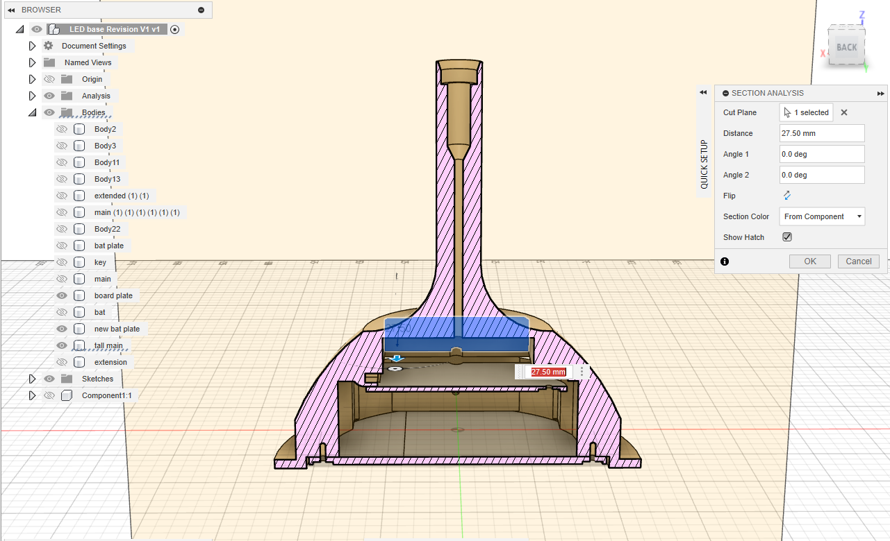
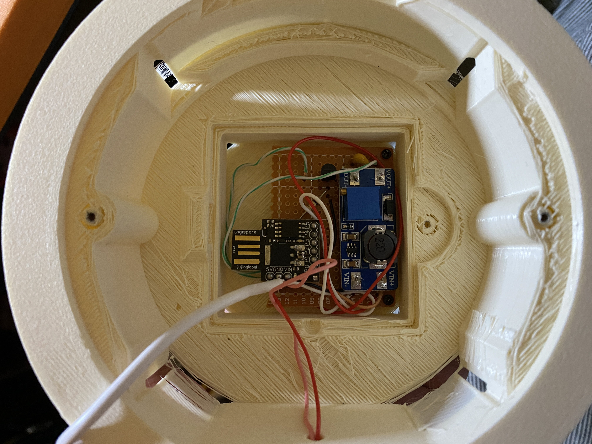
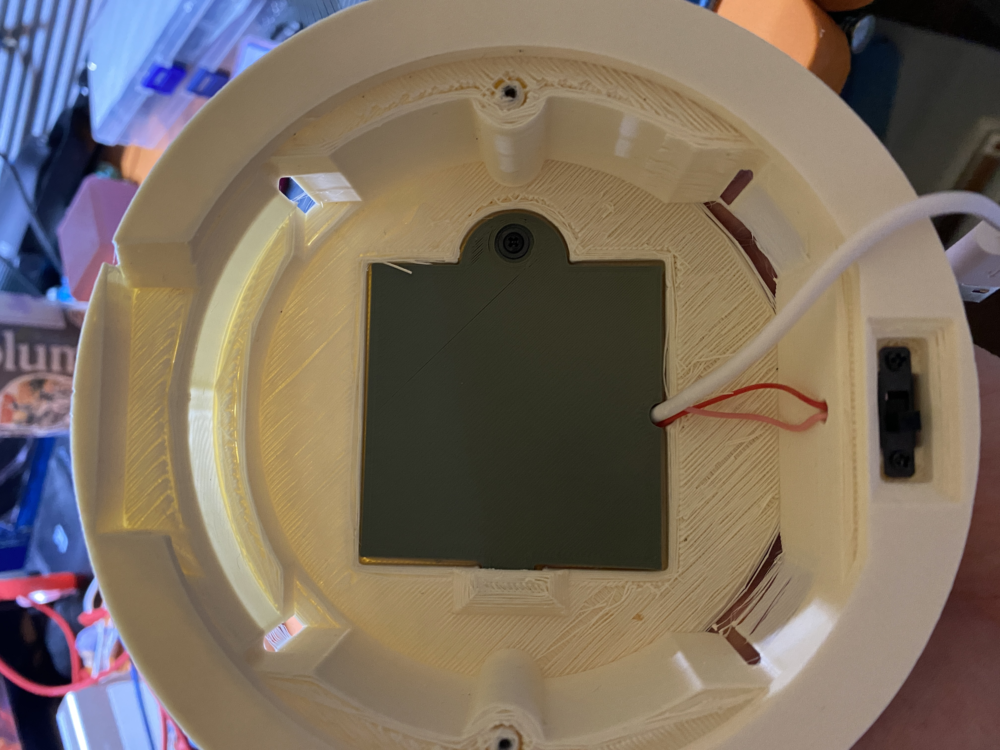
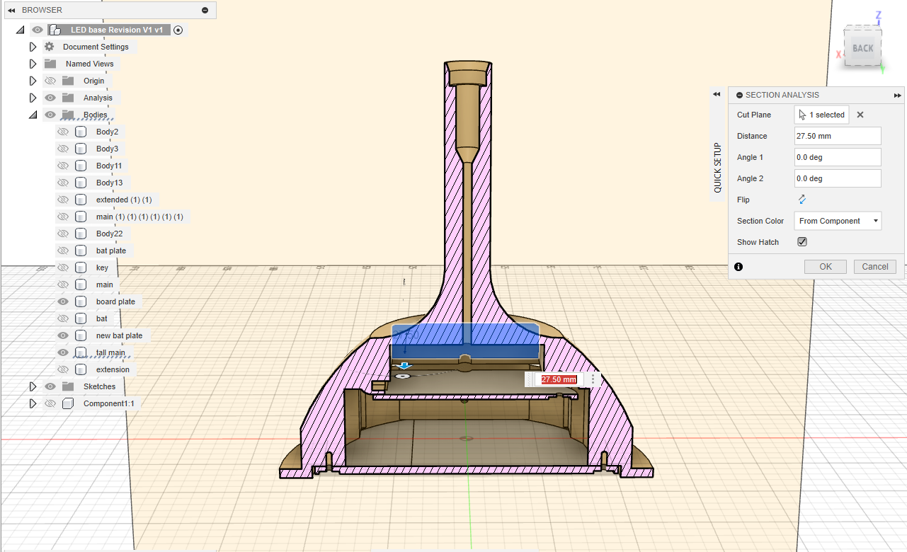
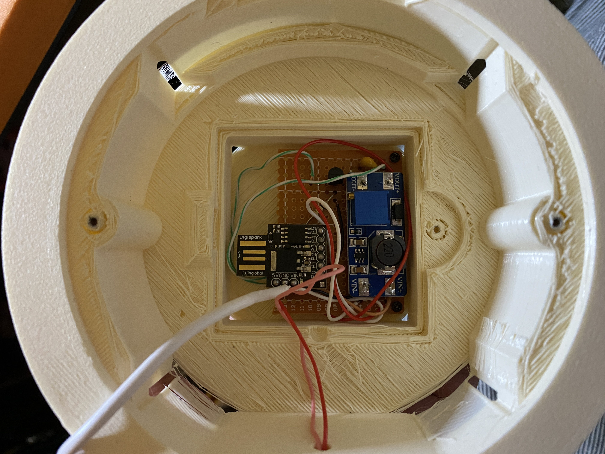
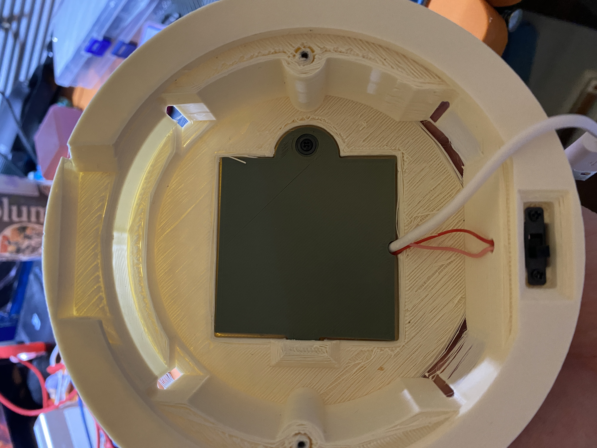

Light Base
 






> The light base was a freelance project for artist Chloë Bass.
> Chloë designed two glass cylinders that reveal a message once light is shined through. My position was to design a hidden base to be inserted into the cylinder and periodically fade in and out of luminescence.
> An ATtiny85 MC was used to control the fading effect. A boost converter boosted the 5V from a portable battery to 12V to light up the landscaping LED. The base was designed so the LED and battery could be replaced by the public while keeping the circuitry hidden.